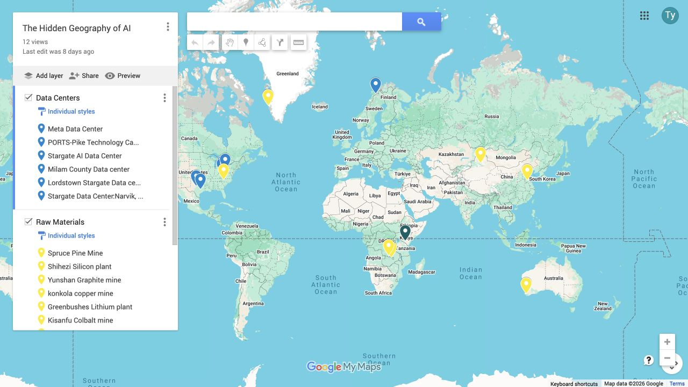
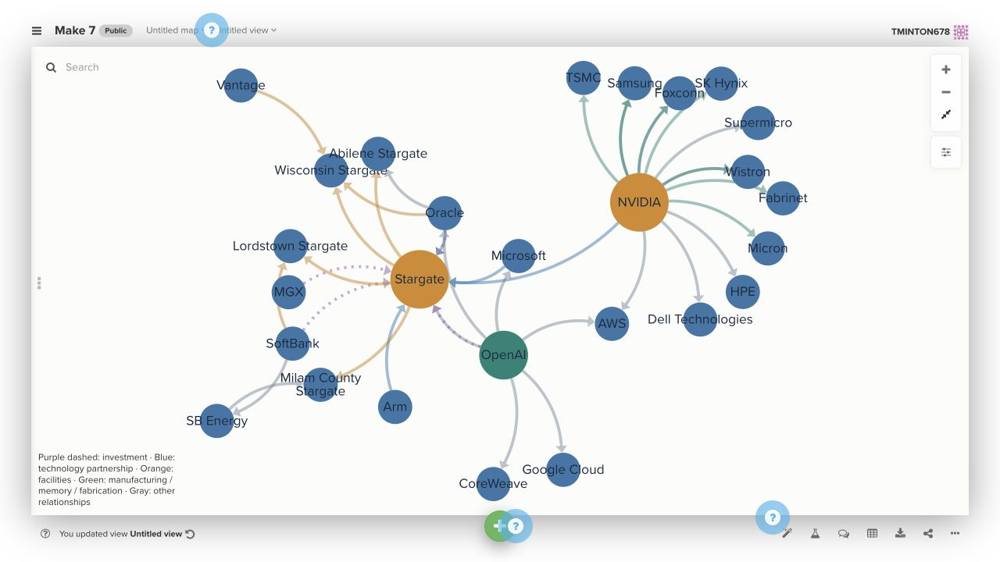

A digital humanities portfolio
Making things.
Asking questions.
An exploration of AI, creativity, and power through images, stories, maps, and networks.
The makes
Six projects · Makes 2–7

Make 02
Digital Humanities Selfie
Identity, portraits, and the limits of an AI remix.
Explore Make 2
Make 03
Campus superhero comic
A campus story told through human direction and AI images.
Explore Make 3
Make 04
A loop of distraction
Studying, scrolling, and the joke of an endless loop.
Explore Make 4-image2.png)
Make 05
Reading The Raven
Comparing patterns and meaning with Voyant and ChatGPT.
Explore Make 5
Make 06
Mapping the AI supply chain
The places, materials, and labor behind the cloud.
Explore Make 6
Make 07
Behind OpenAI
A network of companies, infrastructure, and power.
Explore Make 7